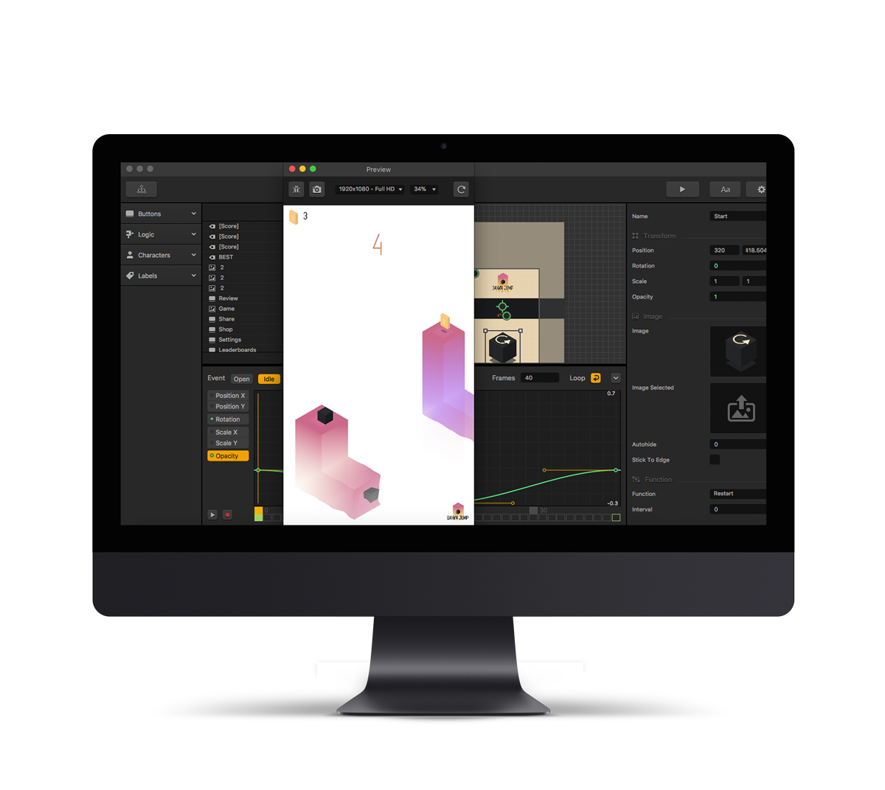

Aprenda a linguagem rust em uma imersão direto ao ponto.
Rust não é apenas mais uma linguagem; é uma mudança de paradigma. Para engenheiros de software seniores, os maiores inimigos sempre foram vazamentos de memória, data races e a sobrecarga de Garbage Collectors.
Com o seu Borrow Checker implacável, Rust garante segurança de memória em tempo de compilação. É o poder e a velocidade de C/C++ combinados com a segurança de linguagens modernas, permitindo o desenvolvimento de sistemas complexos, APIs hiper-rápidas e jogos imersivos sem sacrificar noites de sono debugando falhas silenciosas.
fn forjar_maestria() -> Result<Especialista, Erro> {
let mut desenvolvedor = Desenvolvedor::new();
// Sem data races. Sem segfaults.
desenvolvedor.aprender(Rust::Ownership)?;
desenvolvedor.dominar(Rust::Lifetimes)?;
Ok(Especialista::from(desenvolvedor))
}
Dividida em 8 tomos. Clique para explorar cada semana.
Instalação, configuração e plataformas (Windows, iOS, Linux, WSL)
cargo buildtargetStructsEnumclapGenericsOption e Result Result<T, E>ggezVocê nunca mais será o mesmo.
serde_jsonO céu é o limite. Ao finalizar esta saga, você terá as ferramentas para desbravar qualquer domínio da engenharia de software.
Discutiremos planos de carreira, métodos de estudo contínuo e ajudaremos você a escolher o próximo passo. Qual caminho você irá seguir?
O ecossistema Rust cresce exponencialmente, mas os mestres ainda são raros. Antecipe-se.
Reserve sua vaga e seja notificado em primeira mão quando os portões se abrirem.
Frameworks como Bevy estão transformando o desenvolvimento de jogos com ECS e arquitetura orientada a dados.
APIs modernas, WASM, performance elevada e segurança robusta em aplicações backend.
Rust lidera rankings de satisfação entre desenvolvedores há anos consecutivos.
Networking, resolução de dúvidas em tempo real e acompanhamento próximo.
A segurança e o desempenho de Rust têm atraído cada vez mais desenvolvedores de jogos.
Conhecer Bevy
“É hora de parar de iniciar novos projetos em C/C++.”
“Novos softwares devem usar linguagens memory-safe.”
“Rust reduziu vulnerabilidades de memória no Android.”
Seja avisado quando a próxima turma abrir.